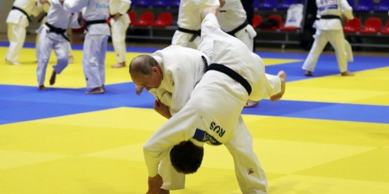
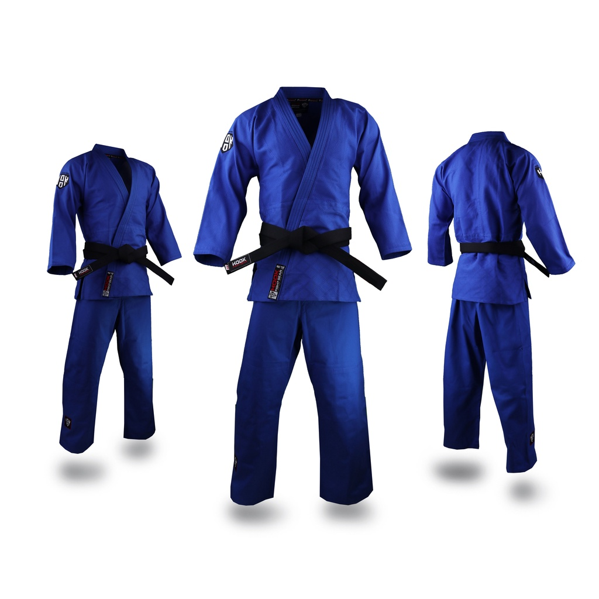
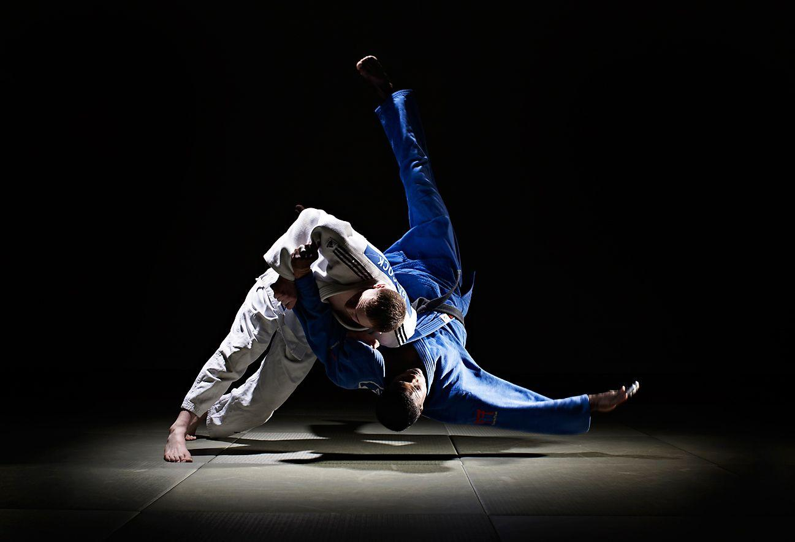

Pengertian
Bela diri judo berasal dari negara Jepang. Tujuan bela diri ini
untuk mengembangkan falsafah jiwa atau spiritual yang positif,
pertumbuhan fisik dan kesegaran jasmani yang baik, serta untuk pembelaan
diri dari bahaya.
Judo merupakan gabungan dari kata "Ju" yang artinya lembut dan "Do" yang
artinya cara, jika digabungkan Judo adalah "cara yang lembut".
Beberapa perlengkapan penting yang dibutuhkan dalam olahraga judo pertama
adalah tempat latihan judo yang memadai termasuk matras yang dikenal dengan
istilah "dojo", kedua adalah pakaian judo yang dikenal dengan istilah "Judogi"

Sejarah Judo
Pada tahun 1877, seorang pria asal Jepang yang bernama Jigoro Kano mempelajari bela
diri jujitsu dengan guru yang bernama Hacinosuke Fukuda. Jujitsu adalah seni bela diri
dari Jepang yang dilakukan dengan menangkap, mengunci, serta membanting lawan.
Tepat pada tahun 1882, Jigoro Kano mulai berfikir untuk mengembangkan dan mengubah sedikit
gerakan dari jujitsu. Sampai pada akhirnya tersebutlah nama judo, yaitu bela diri yang dikembangkan
oleh Jigoro Kano selama bertahun-tahun dan diapun membuka sebuah dojo(tempat latihan) untuk judo.
Seiring dengan berjalannya waktu, judo mulai banyak diminati oleh masyarakat Jepang, dibentuklah
All Japan Judo Federation pada tahun 1949. Judo semakin populer hingga di berbagai negara,
pada tahun 1951, dibentuklah IJF (Internasional Judo Federation) untuk mengatur seluruh masalah judo
di dunia.
Olahraga judo mulai berkembang di Indonesia mulai tahun 1949, yaitu sejak berdirinya perkumpulan judo yang
bernama "Jigoro Kano Kwai" di Jakarta.
Teknik Dasar Judo
Adapun teknik dasar dari bela diri judo adalah sebagai berikut.
-
Teknik Penghormatan / Rei
Dalam melakukan teknik penghormatan, ada beberapa hal yang perlu diketahui, yaitu
sikap, zarei (sikap duduk), tai-sabaki (gerak memutar), dan sikap langkah.
-
Teknik Bantingan Judo / Nage Waza
Bantingan adalah teknik utama dari olahraga bela diri judo. Ada beberapa teknik bantingan, yaitu :
- Hiza guruma, membanting lawan dengan menyapu lutut.
- Deashi barai, membanting lawan dengan sapuan samping.
- Kouchi gari, membanting lawan dengan menyapu kaki lawan dari depan.
- Osoto gari, membanting lawan dengan menyapu kaki lawan dari belakang.
- Uchi mata, membanting lawan dengan menyapu paha lawan.
- Hara ghosi, membanting lawan dengan paha sendiri.
- Tomoe nage, membanting lawan dengan menggulingkan tubuh sendiri ke tanah.
- Tai otoshi, membanting lawan dengan mengangkat langsung tubuhnya.
- Seoi nage, membanting lawan dengan menggunakan tenaga bahu sendiri.
-
Teknik Kuncian Judo / Katame Waza
Agar lawan tidak dapat bergerak, para judoka biasanya menggunakan teknik kuncian.
Berikut beberapa macam tekniknya.
- Kesa gatame, melakukan penguncian pada tubuh lawan dengan bertumpu pada pinggang anda sendiri.
- Yoko shiho gatame, melakukan penguncian pada seluruh tubuh lawan.
- Ude garami, melakukan penguncian pada tangan lawan.
- Okuri erijime, melakukan penguncian pada leher lawan.
- Ude hishigi juji gatame, melakukan penguncian pada kedua tangan lawan.
- Kami shiho gatame, melakukan penguncian dengan memegang ikat pinggang lawan.
-
Teknik Jatuhan / Ukemi
Ukemi adalah suatu gerakan saat badan jatuh ke matras. Terdapat tiga teknik jatuh, yaitu sebagai berikut.
- Mae ukemi, jatuh ke depan.
- Ushiro ukemi, jatuh ke belakang.
- Yoso ukemi, jatuh ke samping.
-
Teknik Kuda-Kuda Judo / Shizen
Shizen adalah sikap tubuh saat berdiri sebagai persiapan untuk membela dan atau menyerang.
Shizen dalam bela diri lain dinamakan kuda-kuda atau persiapan. Terdapat enam macam shizen,
yaitu sebagai berikut.
- Shizen Hontai, kuda-kuda tengah.
- Migi Sizentai, kuda-kuda kanan.
- Hidari Shezentai, kuda-kuda kiri.
- Ligo Hontai, kuda-kuda bertahan tengah.
- Migi Ligotai, kuda-kuda bertahan kanan.
- Higari Jigota, kuda-kuda bertahan kiri.
-
Teknik Pegangan Judo / Kumikata
Kumikata adalah istilah yang digunakan dalam bela diri Judo untuk
menunjukkan gerakan atau cara memegang pada pakaian lawan. Terdapat dua cara pegangan,
yaitu pegangan kanan dan pegangan kiri.
-
Teknik Melangkah Judo / Shintai / Hakobi Ashi
Shintai atau hakobi ashiadalah istilah
yang digunakan dalam bela diri Judo untuk gerakan melangkah atau berjalan. Melangkah
dapat menuju ke arah depan, ke samping, maupun menuju arah belakang.
Selain gerak melangkah tersebut, juga dikenal gerak memutar atau tai sabaki.
Tai sabaki berfungsi untuk mengatur posisi tungkai ketika akan melakukan teknik bantingan.
Terdapat lima macam tai sabaki, yaitu sebagai berikut.
- Mae Mawari Sabaki
- Mae Mawari Sabaki
- Mae Sabaki
- Ushiro Sabaki
- Mae Mawari Sabaki
-
Teknik Serangan Judo
Serangan dalam bela diri judo antara lain dilakukan dengan membanting lawan.
- De Ashi Harai adalah teknik bantingan dengan cara menyapu kaki lawan.
- Uki Goshi adalah teknik bantingan dengan cara melempar pinggang.
- O Soto Gari adalah teknik bantingan dengan menyabit bagian belakang kaki lawan.

Perlengkapan Judo
Olahraga judo dalam latihannya paling tidak harus dilengkapi dengan minimal dua
perlengkapan, yaitu tempat latihan (Dojo) dan pakaian (Judogi). Tempat latihan berupa
tatami (matras) yang berukuran sekitar (14 x 14) meter, sedangkan pakaian judo memerlukan
pakaian khusus berwarna putih yang terdiri dari celana panjang dan baju lengan yang tebal
dan longgar. Selain itu, pejudo harus memakai perlengkapan sabuk atau ikat pinggang yang
dinamakan obi.
Peraturan Judo
Adapun peraturan dalam olahraga beladiri judo antara lain sebagai berikut.
-
Durasi Pertandingan
Pertandingan dapat berlangsung sekitar 3 - 20 menit
-
Sistem Penilaian
- Judoka akan mendapatkan poin apabila berhasil membanting lawan terlebih dahulu.
- Judoka mendapatkan poin apabila berhasil mengunci lawan sampai lawan mengucapkan
kata menyerah atau melakukan kuncian selama 30 detik.
-
Larangan Dalam Pertandingan
- Melepas ikat pinggang lawan tanpa izin juri.
- Menggigit seragam lawan.
- Menyentuh wajah lawan.
- Menarik rambut lawan.
- Mencoba mematahkan jari lawan.
- Menendang tangan lawan.
- Dan apapun yang membahayakan lawan.

Cabang olahraga judo adalah seni bela diri, olahraga, dan filosofi yang berakar di
Jepang. Judo dikembangan dari seni bela diri kuno Jepang yang disebut Juijutsu.
Pemain judo disebut judoka atau pejudo. Judo sekarang merupakan sebuah cabang bela
diri populer, bahkan telah menjadi cabang olahraga resmi Olimpiade.